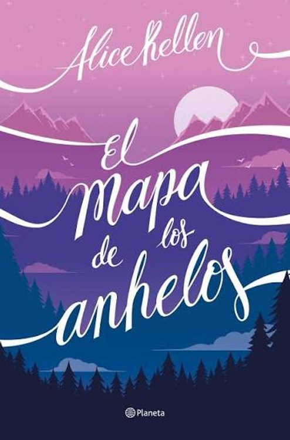

EL ESTANTE COMÚN
Detalles del libro
|
 |
El mapa de los anhelospor Alice Kellen SINOPSIS¿Y si te dieran un mapa para descubrir quién eres? ¿Seguirías la ruta marcada hasta el final? Imagina que estás destinada a salvar a tu hermana, pero al final ella muere y la razón de tu existencia se desvanece. Eso es lo que le ocurre a Grace Peterson, la chica que siempre se ha sentido invisible, la que nunca ha salido de Nebraska, la que colecciona palabras y ve pasar los días refugiada en la monotonía. Hasta que llega a sus manos el juego de «El mapa de los anhelos» y, siguiendo las instrucciones, lo primero que debe hacer es encontrar a alguien llamado Will Tucker del que nunca ha oído hablar y que está a punto de embarcarse con ella en un viaje directo al corazón, lleno de vulnerabilidades y sueños olvidados, anhelos y afectos inesperados. Pero ¿es posible avanzar cuando los secretos comienzan a pesar demasiado? ¿Quién es quién en esta historia? |
CALIFICACIONES
–/10
PALABRAS CLAVE
Romance, New adult, Contemporáneo, Drama